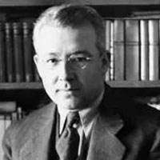
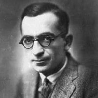

Doğan Cüceloğlu
Doğan Cüceloğlu’nun uzmanlık alanı algılama, öğrenme ve dil psikolojisidir. Türkçe ve İngilizce yayınlarının birçoğunu iletişim konusunda yapmıştır; bu yayınlar aynı toplumda yetişmiş insanlar arasındaki ilişkileri olduğu kadar, farklı toplum ve kültürlerde yetişmiş kişilerin iletişim ilişkilerini de kapsar.Doğan Cüceloğlu halen CSU'de görevlidir.
|

Sabahattin Ali
25 Şubat 1907’de Gümülcine’de doğdu, 2 Nisan 1948’de Kırklareli’nde öldü.1948’de bir yazısı yüzünden tutuklandı, üç ay kadar hapis yattı. Sürekli izlendiği için yurtdışına kaçmak istedi, ancak Kırklareli dolaylarında bir kaçakçı tarafından öldürüldüğü iddia edildi. Şiirler, hikâyeler, romanlar yazdı, çeviriler yaptı.
|

Peyami Safa
1949`da yayınlanan son eserlerinden "Matmazel Noraliya`nın Koltuğu"nda da tıp öğrenimi yaparken bunalıma girerek felsefeye yönelen ve sonuçta mistik dünya görüşünde karar kılan bir gencin öyküsünü anlattı. Edebiyat ve siyaset tartışmalarının hep içinde bulundu. Nâzım Hikmet, Nurullah Ataç, Zekeriya Sertel, Muhsin Ertuğrul, Aziz Nesin`le polemiklere girdi.
|
Ayşe Kulin
Arnavutköy Amerikan Kız koleji Edebiyat Bölümü`nden mezun oldu. Cumhuriyet, Güneş ve Dünya gazetelerinde muhabirlik, çeşitli dergilerde yazarlık ve yazı işleri müdürlüğü yaptı. Uzun yıllar halkla ilişkiler uzmanı, televizyon, reklam ve sinema filmlerinde sahne yapımcısı, sanat yönetmeni ve senarist olarak çalıştı.
|